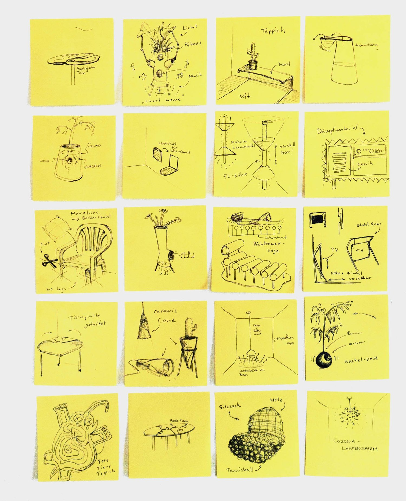
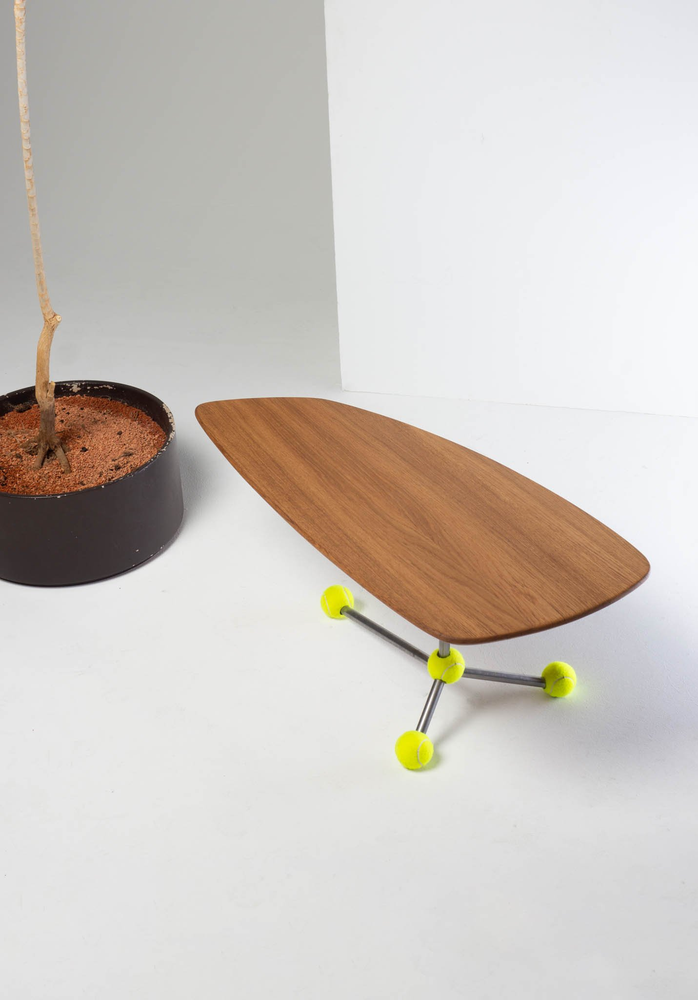
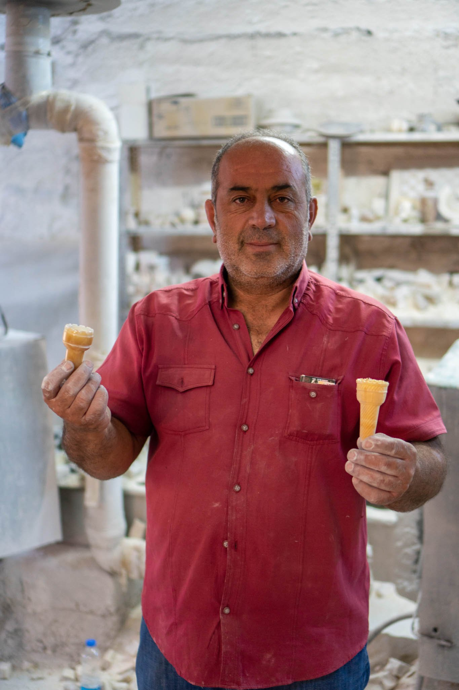
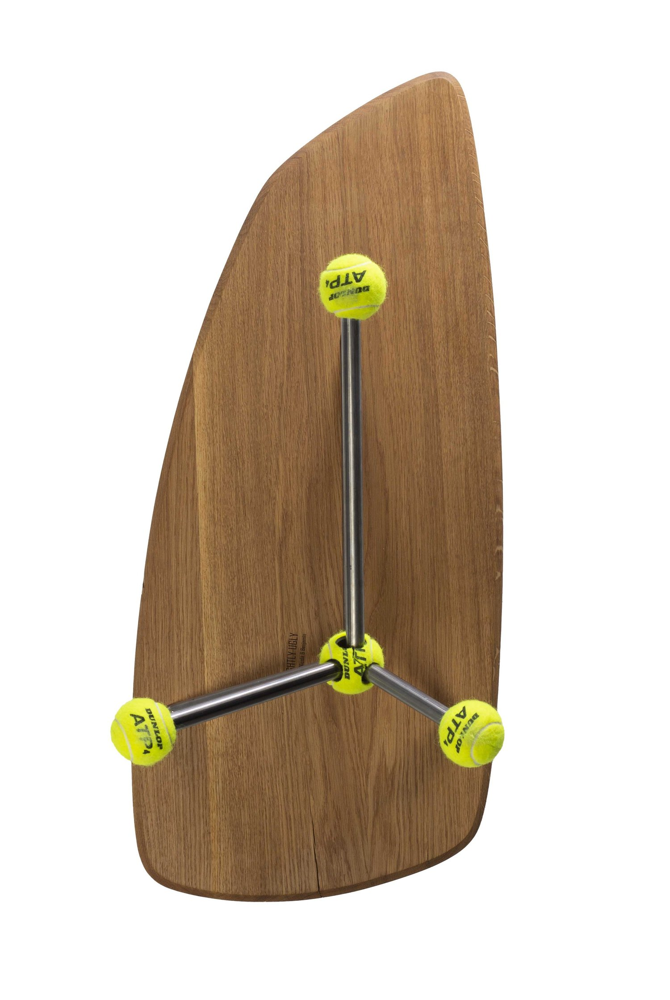
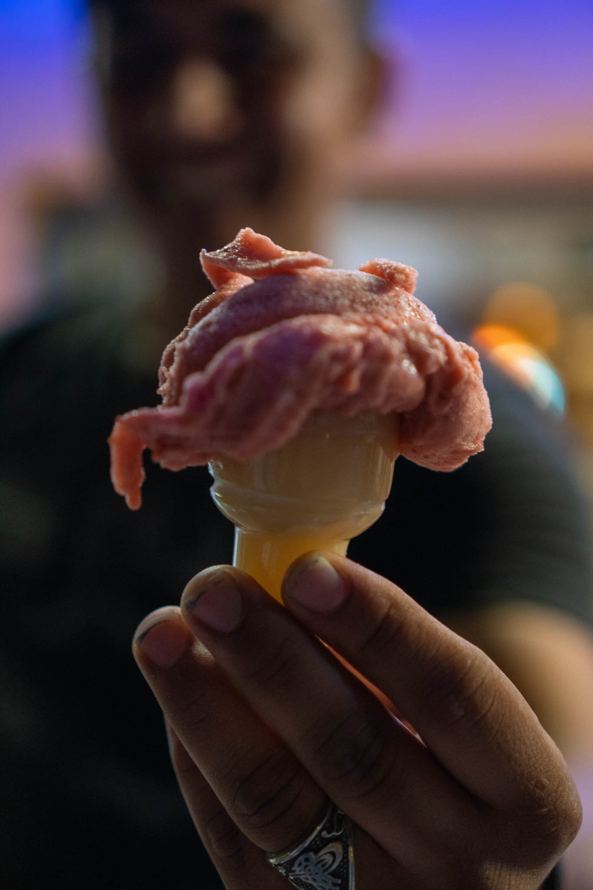
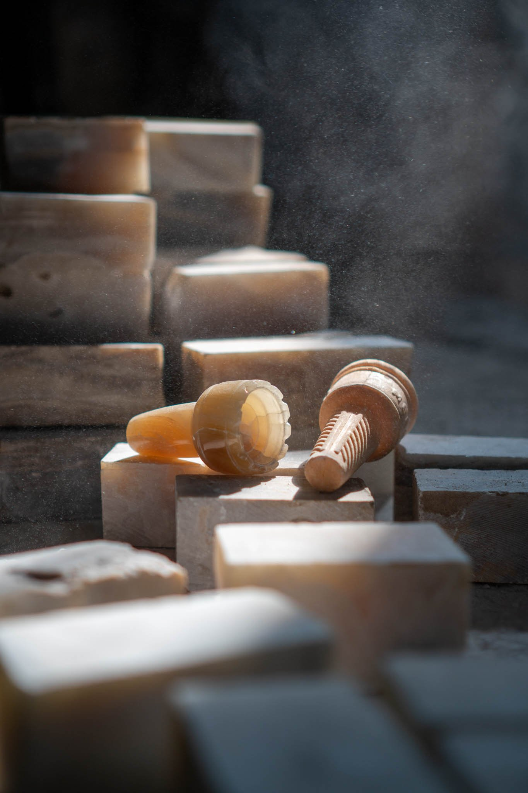
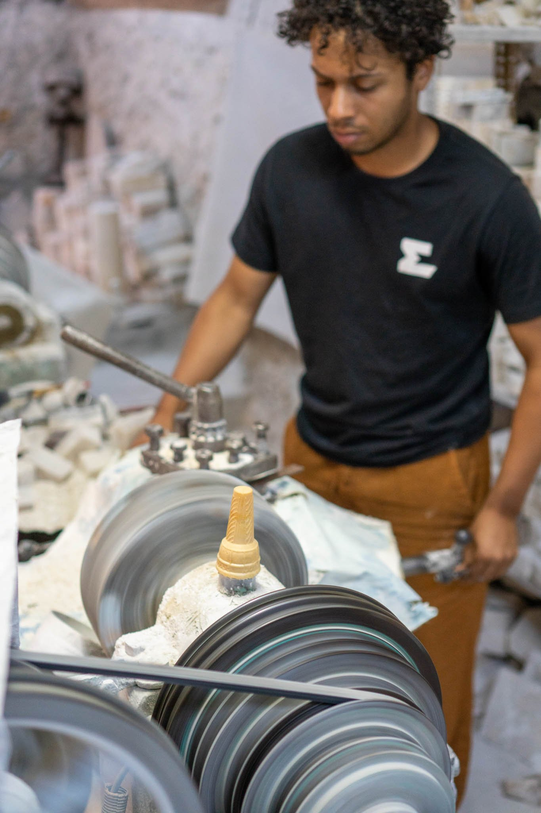
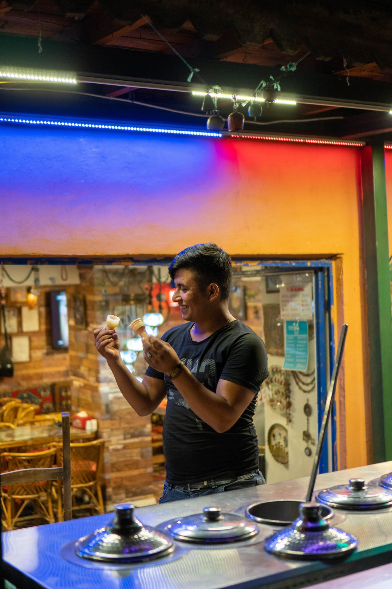
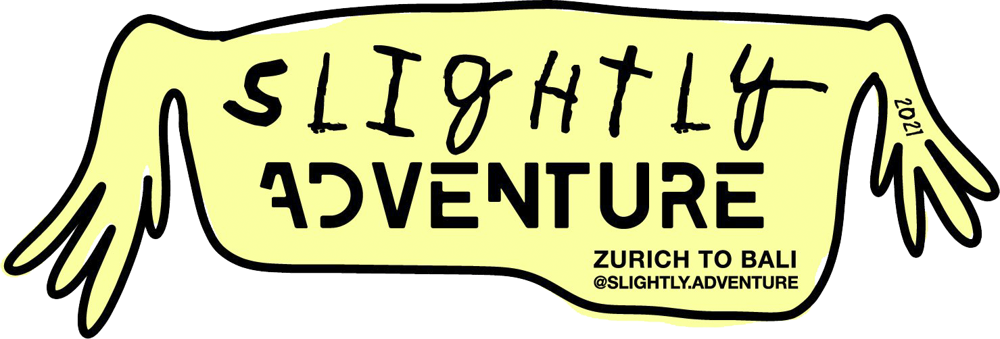

Slightly Studio
slightly Studio is a creative laboratory that values "doing over thinking," producing objects that are intentionally "only a little bit functional" to reclaim the playful essence of the design process.

Founded as a playful counterpoint to the meticulously structured and functional projects of academic design, slightly Studio focuses on humorous processes and fast, pragmatic solutions. Embracing the philosophy that "Form Follows Fun," the studio creates "slightly serious" objects that encourage a decelerated, intuitive approach to making and experiencing design.
The "Naïv-Design" Manifesto. The studio operates under a core set of guiding principles: being intuitive, simple, and "felt from the gut," ensuring that the joy of doing always takes precedence over over-analytical perfectionism.
Foundation with slightly sTable. The studio’s philosophy was first embodied by "slightly sTable," a three-legged coffee table made of oak, steel pipes, and tennis balls, created out of a simple need for a living room table.
Global Design Adventure. The project "slightly Adventure" took the studio's vision on a motorcycle journey from Zurich to Bali, where spontaneous stops allowed for collaborative creation with local artisans along the way.
Cross-Cultural Exchange (slightly sweet). In an opal workshop in Cappadocia, the team designed an opal ice cream cone; despite initial skepticism from the local masters, the project eventually united the entire workshop in a shared moment of creative enthusiasm.
Sustaining the Joy of Making. Supported by grants, the collective (Benjamin Amiel and Nicolà Borrer) continues to develop unique products that celebrate a different understanding of design, aiming to pass on their creative joy to a wider audience.







